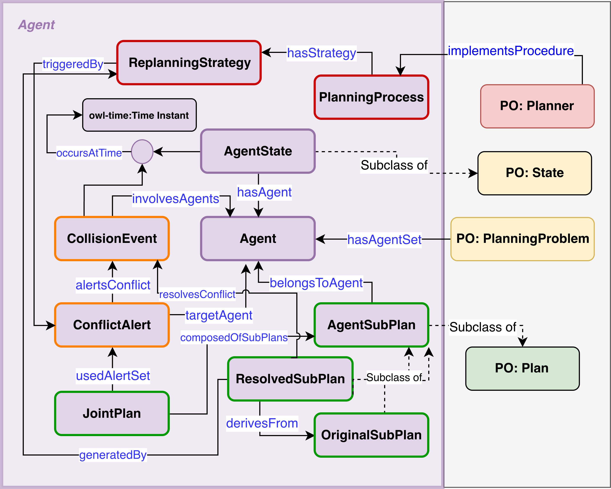

maPO Turns Logs Into Knowledge
maPO combines a planner-agnostic ontology schema with a SPARQL-based explanation framework. Structured MAPF traces are mapped to RDF triples, then queried without modifying the underlying planner.
Ontology schema

System architecture

Figure 3a. maPO extends the Planning Ontology with MAPF-specific constructs for agents, conflicts, alerts, strategies, and revised plans.
Figure 3b. Structured JSON traces are mapped to RDF and served to a web platform for SPARQL-based explanation generation.